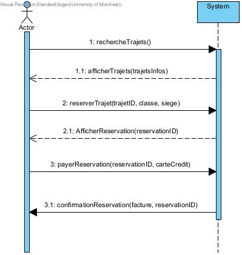

IFT 2255 - Devoir 1
Information générale
Nom: Logan Barré
Matricule: 20276178
Courriel: logan.barre@umontreal.ca
temps mis: 50 heures
Nom: Qiwu Wen
Matricule: 20230961
Courriel: qiwu.wen@umontreal.ca
temps mis: 40 heures
Nom: Ryan Azoune
Matricule: 20162578
Courriel: ryan.azoune@umontreal.ca
temps mis: 40 heures
Distribution des tâches
Soumetteur et Gestionnaire: Logan Barré
|
Tâche
|
Logan
|
Qiwu
|
Ryan
|
|
Diagramme de classe conceptuel
|
Classes aerien, Mise en page, uniformisation, optimisation, associations(50%)
|
classe naval(33%)
|
classe ferroviaire(33%)
|
|
DSS
|
DSS Client aerien, DSS admin aerien
|
DSS client naval, DSS admin naval,DSS admin naval setTartif
|
DSS client ferroviaire client
|
|
Diagramme de sequence
|
Diagramme de sequence aerien
|
diagramme de sequence naval
|
diagramme de séquence ferroviaire
|
|
Modele du design
|
Classes aerien, attributs, methodes et organisation (50%)
|
classe naval
|
classe ferroviaire
|
|
Contraintes OCL
|
Classes OCL (Localisation, Vol, Registre et Section)
|
contraintes OCL naval
|
contraintes OCL ferroviaire
|
|
Rapport HTML
|
Creation du rapport liens, images, css, html, mise en page, justification
|
Hypotheses
|
Hypotheses
|
|
Diagramme paquet
|
Creation du diagramme paquet
|
Avis
|
Avis
|
Tâche 1:
Hypothese:
Pour le diagramme de classe conceptuel, nous avons fait un diagramme qui a une bonne cohésion entre les
classses et lorsque nécessaire combiner les classes différentes qui composent les voyages
ferroviaire, naval et aérien en utiisant l'héritage par exemple pour Itinéraire avec Aérien, Ligne et Trajet.
-On a supposé que chaque compagnie a une localisation, mais une localisation n'a pas nécessairement de compagnie.
-On a supposé qu'un client peut avoir plusieurs réservations, par exemple s'il ou elle veut réserver pour sa famille,
alors la réservation se fait quand même au nom du client.
-Nous avons décider de grouper la priorité pour le voyage aérien et ferroviaire et créer une énumération pour ces priorités
similaires aérien et ferroviaire pour qu'il soit plus facile de les distinguer et une énumération pour les voyages navals ce
qui facilite l'encapsulation et aide à la clarté.
-Nous avons essayer le plus posssible de grouper ce qui était commun entre les 3 voyages avec des attributs similaires et des
classes générales qui peuvent les englober exemple Compagnie, Localisation, Itinéraire,
Moyen de Transport et utiliser des classes qui sont plus spécifiques là où c'est nécéssaire.
Nous avons groupé siège et cabine ensemble puisqu'ils avaient des attributs similaires pour ferroviaire et aérien, mais
cabine aura besoin de capacite qui sera set à 1 lorsque l'on parle de siège.
Nous avons utilisé un seul système pour gérer les réservations de tous les types de voyage afin de augmenter la cohésion.
Nous supposons qu'une reservation peut contenir plusieurs sièges afin de satisfaire aux clients qui voyagent en groupe.
Nous avons supposé que dans le côté client, la première chose qu'il souhaite faire est de visiter
tous les itinéraires de la ville qui l'intéressent. Cela ne
nécessite pas de saisir vos informations personnelles (login), donc toutes nos fonctions d'affichage
de voyage apparaissent dans le registre. Lorsque le client confirme le voyage qu'il souhaite effectuer,
il doit effectuer une réservation en ligne. En fonction du voyage sélectionné, nous pouvons éditer une
classe de réservation.
Nous avons supposé que le client peut effectuer une réservation sans payer.
Comme le client peut être indécis quant à une décision impromptue, il peut d'abord effectuer
une réservation, puis la payer dans le délai spécifié après de réfléchir attentivement.
Cette réservation sera référencée à un numéro de réservation. Le client pourra
utiliser ce numéro de commande pour obtenir une instance de la classe de reservation afin
de faire payer. Lors du paiement, le client doit saisir ses informations d'identité
personnelle, le nom, l'adresse e-mail, le numéro de passeport
Solution:
Voici la solution pour la tache 1:
- Voici le Lien vers le diagramme de classe conceptuel et les différents Diagrammes de séquence système
Liste des Diagrammes de domaine :

Diagramme de classe conceptuel

Diagramme de séquence système aérien (Client)(Logan)

Diagramme de séquence système naval (Client)(Qiwu)

Diagramme de séquence système ferroviaire (Client)(Rayan)

Diagramme de séquence système aérien (Admin) (Logan)

Diagramme de séquence système naval (Admin)(Qiwu)
Tâche 2:
Hypothese:
Pour le diagramme de classe logiciel, nous avons continuer à établir ces relations entre les classes
en s'assurant que les attributs des classes sont bien propre à celles-ci et en utilisant le polymorphisme.
Nous avons essayé le plus possible de réutiliser les méthodes similaires entre les 3 voyages et aussi faciliter
la modificiation du logiciel. Nous avons essayer de grouper le plus possibles les méthodes en commun pour chaque
voyage différent et distinguer celles-ci lorsque nécessaire. Nous avons bâti notre diagramme de façon qu'il est
facile d'ajouter un autre type de voyage si nécessaire ou retirer un voyage si nécessaire.
Solution:
Voici la solution pour la tache 2:
- Voici le Lien vers le diagramme de classe conceptuel et les différents Diagrammes de séquence système
Liste des Diagrammes de domaine :

Diagramme de classe logiciel

Diagramme de séquence aérien (Client)(Logan)

Diagramme de séquence système naval (Client)(Qiwu)

Diagramme de séquence système ferroviaire (Client)(Rayan)

Diagramme de packet (Logan)
Hypothese Tâche 3 :
Hypothese OCL :
Concernant la première question en OCL sur l'identification des aéroports, j'ai considéré que chaque code devait être unique pour un aéroport, mais qu'un port ou une gare pouvait partager le même code sans problème, étant donné qu'ils représentent des modes de transport distincts. C'est pourquoi j'ai regroupé tout cela dans la première condition OCL.
Pour les compagnies, bien que le code OCL ne soit pas explicitement demandé, j'ai jugé bon de l'ajouter pour garantir l'unicité. J'ai utilisé une précondition pour cela. J'aurais pu également le mettre en invariant, mais j'ai préféré innover pour montrer différentes manières d'implémenter des conditions similaires. En outre, afin de gérer les variations de prix selon les compagnies, j'ai directement inclus leurs tarifs.
Tâche 3:
Hypothese:
Pour les contraines OCL, nous avons mis ensemble le plus possible les contraintes liées aux noms des Ports, Gares
et Aéroports puisque ceux-ci avaient les mêmes contraintes.
Solution:
Voici la solution pour la tache 3:
- Voici le Lien vers les contraintes OCL
Contexte Localisation
context Localisation inv:
self.IdLoc->size() = 3
and
self.oclIsKindOf(Aeroport) implies Aeroport.allInstances()->isUnique(IdLoc) or
self.oclIsKindOf(Port) implies Port.allInstances()->isUnique(IdLoc) or
self.oclIsKindOf(Gare) implies Gare.allInstances()->isUnique(IdLoc)
Contexte Vol
context Vol inv:
self.IdItin.substring(1,2)->oclIsTypeOf(String) and
self.IdItin.substring(3).oclAsType(Integer)->oclIsTypeOf(Integer)
context Vol inv:
Vol.allInstances()->select(v | v <> self and v.compagnie <> self.compagnie and v.IdItin.substring(1,2) = self.IdItin.substring(1,2)) -> isEmpty()
and
Vol.allInstances()->select(v | v <> self and v.compagnie = self.compagnie and v.IdItin.substring(3) = self.IdItin.Substring(3)) -> isEmpty()
context Vol inv:
self.Arrive <> self.Depart
Contexte Registre
context Registre::reserver(itineraire, siege,priorite)
pre: siege.disponibilte = true
context Registre::payer(reservation, noms,courriel, numpasp,carteCredit)
post : reservation.confirmation = true
Contexte Section
context Section
inv: self.cabine -> forAll(p1, p2 | p1.prix = p2.prix) and self.siege->forAll(s1, s2 | s1.prix = s2.prix)
Contexte Trajet
context Trajet
inv: self.dateArriv - self.dateDep <= 21
inv: self.port -> first() = self.port -> last()
Tâche 4
Voici nos justification pour la tache 4 :
Dans ce Devoir, nous avons pris certaines hypothèses pour gérer les contraintes de manière agile. Nous avons choisi de maximiser l'utilisation de l'hérédité pour garantir cette agilité. Nous partons du principe que le client accède au système via le registre et que les administrateurs passent par le contrôleur.
Ainsi, le client peut accéder aux vols et aux réservations grâce à son ID de réservation. Nous avons également opté pour une généralisation des compagnies, qu'elles soient maritimes, aériennes ou ferroviaires, voire qu'elles puissent appartenir à plusieurs catégories. Notre objectif principal était d'assurer la clarté et la concision dans les diagrammes, pour être précis sans ajouter de détails superflus.
Nous avons également utilisé des énumérations pour les opérations et les types de classes, afin de réduire le nombre de méthodes et de n'appeler que le type d'opération nécessaire dans une méthode générique.
Dans de nombreux cas, nous n'avons pas utilisé la composition, notamment pour les sections, les sièges et les trajets des compagnies. Cela est dû au fait que la composition requiert au moins un élément, ce qui peut poser des problèmes lors de la création d'une nouvelle compagnie qui n'a pas immédiatement de trajet associé. De plus, nous avons distingué les sièges en deux catégories, siège et cabine, pour une meilleure lisibilité. Partant du fait que les cabines auraient une capacité >= 1 alors que les sièges elles seraient à 1 tout le temps.
Le contrôleur a été placé uniquement dans le modèle de design, car il est constitué uniquement de méthodes et présent pour le design, tandis que le registre est dans le modèle de domaines pour indiquer où le client accède au système.
La difficulté de séparer le travail en 3 était présente après que chacun ait fait sa partie liée à un mode de voyage. Nous avons tout regroupé et généralisé la majorité des éléments.
Pour optimiser le couplage et la cohésion, nous avons cherché à faciliter l'accès du contrôleur aux différentes parties du système et à éviter les intermédiaires. Le contrôleur occupe donc une position centrale, tandis que les autres parties sont associées de manière logique : un mode de transport avec sa composition (sections, sièges), puis à quel trajet il appartient et à quelle localisation. Le mode de transport représente l'association entre un trajet et une localisation, faisant ainsi le lien entre eux.
Justification OCL: (Logan)
Concernant la première question en OCL sur l'identification des aéroports, j'ai considéré que chaque code devait être unique pour un aéroport, mais qu'un port ou une gare pouvait partager le même code sans problème, étant donné qu'ils représentent des modes de transport distincts. C'est pourquoi j'ai regroupé tout cela dans la première condition OCL.
Pour les compagnies, bien que le code OCL ne soit pas explicitement demandé, j'ai jugé bon de l'ajouter pour garantir l'unicité. J'ai utilisé une précondition pour cela. J'aurais pu également le mettre en invariant, mais j'ai préféré innover pour montrer différentes manières d'implémenter des conditions similaires.
Justification diagramme Paquet: (Logan)
Pour le diagramme de paquet, j'ai regroupé selon quatre paquets liés entre eux mais dépendants. En premier, le "core" représente la base du logiciel, incluant les compagnies, trajets, localisations ainsi que le contrôleur. En second, la spécialisation du "core" représente les classes héritées telles que les gares, vols et autres. Le troisième représente tout ce qui est lie au transport, incluant les different moyens de transport et leur composition. Nous savons que si nous devions ajouter des spécifications sur les transport en eux meme , ce serait ici. Enfin, le dernier représente l'aspect réservation et paiement, une partie des actions client mais essentielle à la vente.